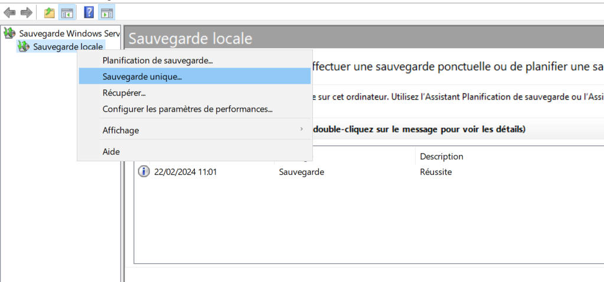
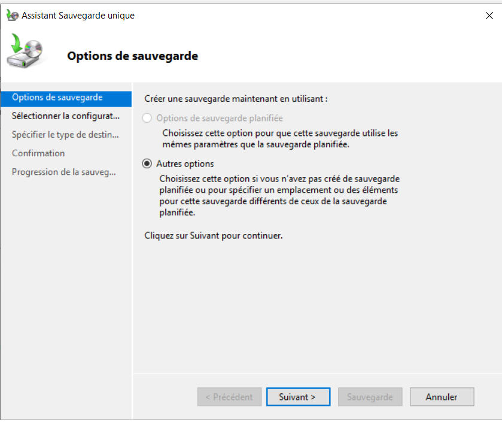
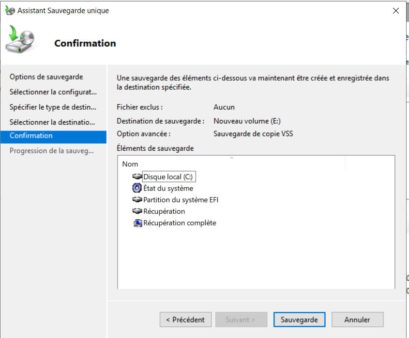

Backup
Dans le gestionnaire de sauvegarde, faire un clic droit sur sauvegarde locale et cliquer sur Sauvegarde unique..

Cliquer sur Suivant >

Choisir si l'on veut sauvegarder le serveur complet, ou seulement certains volumes ou fichiers

Choisir si l'on veut faire la sauvegarde sur un lecteur local ou sur un dossier partagé

Choisir le volume dans lequel on souhaite mettre notre sauvegarde

Si le volume est sur le serveur, il faut l'exclure de la liste des éléments à sauvegarder

On vérifie les éléments à sauvegarder et on confirme notre choix

Une fois la sauvegarde effectuée, on peut la retrouver dans le gestionnaire de sauvegarde